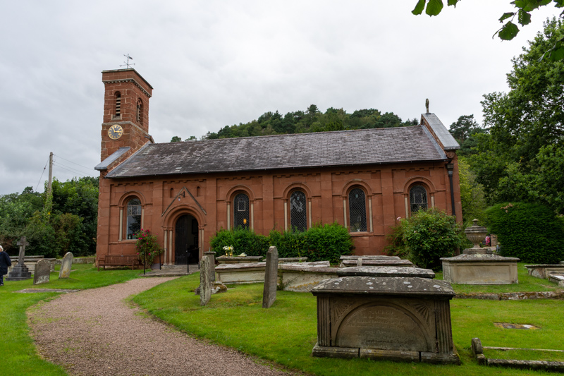
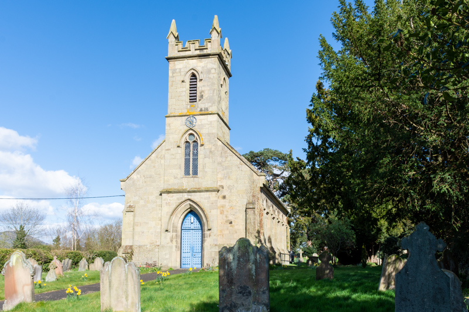
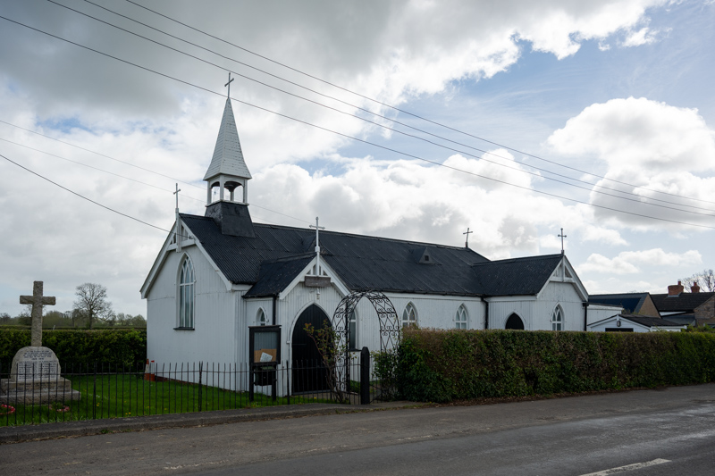
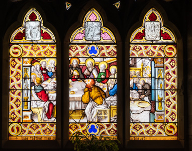
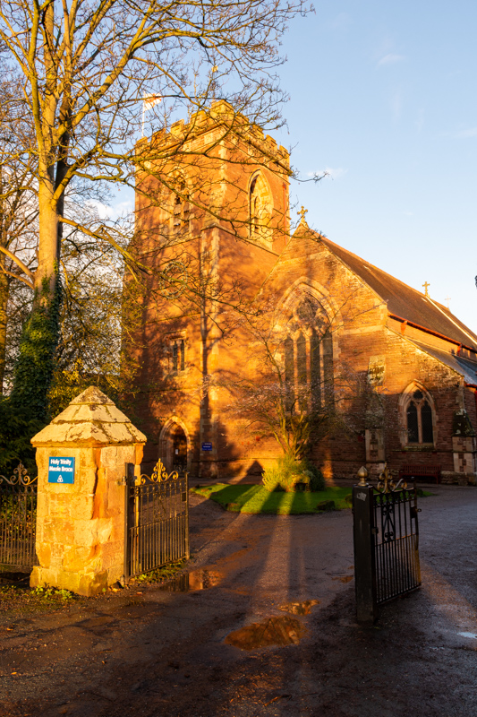
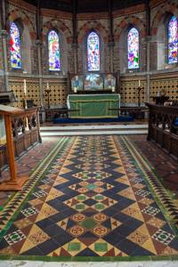
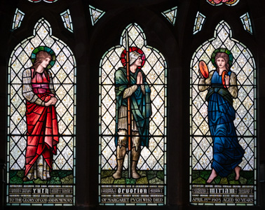
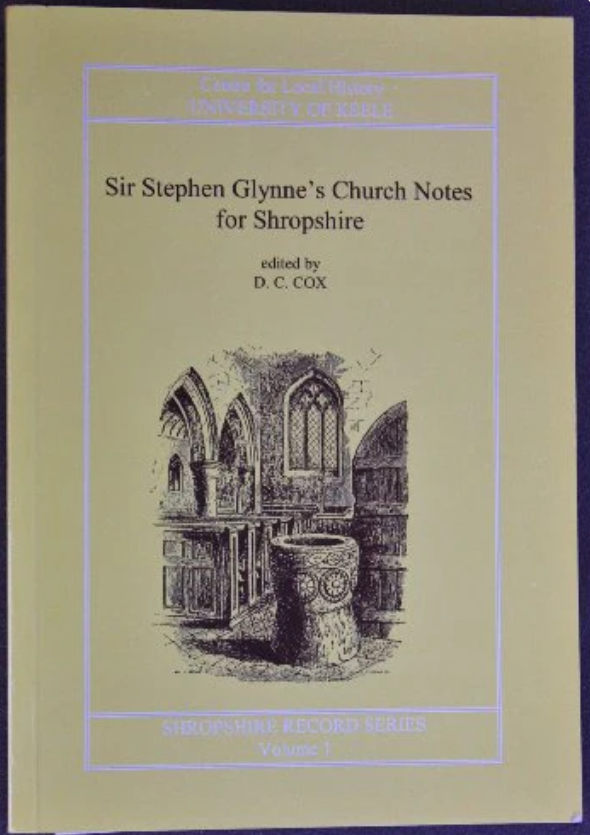
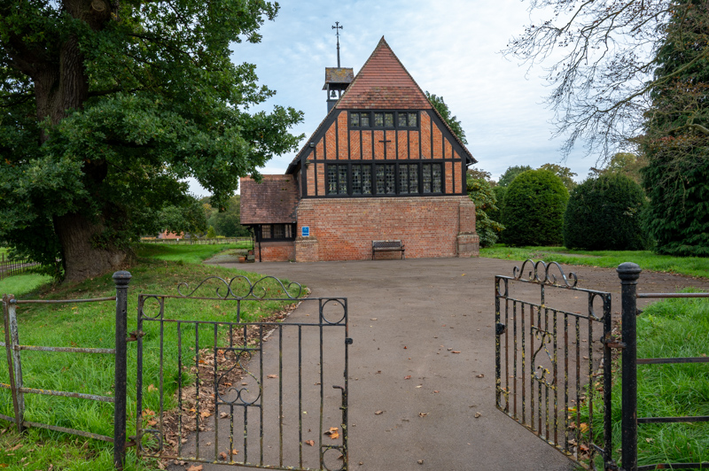
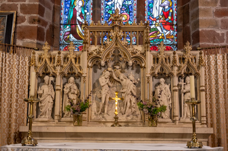

8. Victorian Britain (1837 AD to 1901 AD)

Catholics and Nonconformists are given greater freedoms...a significant amount of church restoration and building is undertaken to provide for growing populations in the cities and other areas driven by the industrial revolution...
The Church of England was predominant at the start of the 19th Century, however, by the end of the Victorian era the Church of England was increasingly only one part of a vibrant and often competitive religious culture, with non-Anglican Protestant denominations enjoying a new prominence. The beliefs and practices at the time were by no means uniform. At one extreme were the Evangelicals, who focused on the Gospel teachings rather than ritual, and emphasised preaching and Bible study. At the other, High Churchmen revived rituals, images, incense and vestments not seen in England since the Reformation.
Restrictions on Nonconformists
By the middle of the 19th Century, Nonconformists comprised about half of church attendees in England, and gradually the legal discrimination that had been established against them was removed. Legal restrictions on Roman Catholics were also largely removed. The number of Catholics grew in Great Britain due to conversions and immigration from Ireland. Legislation in the 1820s had removed some of the barriers that had excluded Christians outside the Church of England – such as Catholics and Methodists – from most public offices and degrees at Oxford or Cambridge.
Pressure for further change was encouraged when the 1851 census revealed that out of a population of nearly 18 million, only 5.2 million attended Church of England services, with 4.9 million attending other Christian places of worship. The rise of non-Anglican Protestant denominations – including Methodists, Baptists and Quakers – is particularly striking: between them they represented nearly half the worshipping nation. This blow to the Church of England led to pressure for further reforms, culminating in an 1871 Act of Parliament that abolished all religious requirements for attendance at universities.
Victorian Crisis of Faith
Secularism (the principle that public life and state institutions should be neutral regarding religion, separating religious and state affairs) and doubts about the accuracy of the Old Testament grew among people with higher levels of education. Northern English and Scottish academics tended to be more religiously conservative, whilst agnosticism and even atheism (though its promotion was illegal) gained appeal among academics in the south. Historians refer to a 'Victorian Crisis of Faith', a period when religious views had to readjust to accommodate new scientific knowledge and criticism of the Bible.
The 19th Century was also the first time in England that a substantial number of public figures openly declared that they had no religious beliefs.
Study of the scriptures as historical texts, and scientific advances such as Charles Darwin’s theory of evolution, made it more difficult for many educated people to accept the literal truth of the Bible. Some intellectuals and writers rejected the teachings of Christianity altogether. Others, such as the poet Alfred Tennyson, clung to their faith, ‘believing where we cannot prove’.
New Churches and Parishes
The 19th Century saw the greatest amount of church repair / restoration and new church building since the Middle Ages.
At the beginning of the Century the difficulty of creating new parishes – a process that until 1843 required an Act of Parliament – meant that the Church was poorly represented in England’s new manufacturing cities. The government had begun to remedy this, as in 1818 it had voted £1 million to be spent on new churches, which was followed by another £500,000 in 1824, thus producing a surge in church building / restoration. The enthusiasm for building or restoring churches continued in Victoria’s reign, galvanised by the ‘High Church’ Oxford Movement - between 1851 and 1875, 2,438 churches were built or rebuilt. One result of these changes was a major increase in the number of Church of England clergymen, from 14,500 in 1841 to 24,000 in 1875.

Church Building - Early-Victorian
As a result of the Church Building Act, there was extensive church building in Shropshire on a scale not seen since the 12th Century. Many architects followed the revival inmedieval Gothic architecture.
Between 1830 and 1849, 33 churches were built, mostly in the (relatively plain) Early English style, a few in the neo-Norman (emulates works of the 11th and 12th Century Romanesque in Britain and Norman France) style (Grinshill, All Saints, 1839-1840 is a good example of this) and a few in the disappearing Classical style. The churches were mostly by local architects, the most prolific of these was Edward Haycock snr, who was responsible for about 13 churches, the best of which are Cressage (Christ Church, 1841) and Dorrington (St Edward, 1845). Arguably the finest church of the 1840s is Broseley (All Saints, 1845), which, unusually for this time, is built in the Perpendicular style.

All Saints, Grinshill

Christ Church, Cressage

All Saints, Broseley

Organ
Organs were introduced to English churches as early as the 10th Century, with a notable, massive instrument documented at Winchester Cathedral during that period. While early examples existed in monasteries and cathedrals, they became firmly established in English parish churches following the Reformation, particularly growing in popularity in the 18th and 19th Centuries.
Shropshire churches contain organs by some of the most well know makers. The organ at St Gregory, Morville is by George Holdich (dated circa 1854-1864) and is almost in its original form. Holdich's greatest achievement was the new organ for Lichfield Cathedral in 1861.

St Gregory, Morville - Holdich Organ
1842 AD
General Rowland Hill, 1st Viscount Hill (1772–1842), the Shropshire-born hero of the Napoleonic Wars and Waterloo, is buried at St Mary Magdalene Church in Hadnall, near Shrewsbury, Shropshire. He lived at nearby Hardwick Grange and requested a simple burial in his local church.

St Mary Magdalene, Hadnall - Memorial to General Rowland Hill
1843 AD (28th July)
The New Parishes Act 1843 is passed by Parliament - its purpose was to allow the creation of new ecclesiastical districts for the spiritual care of populous parishes in England. The act empowered the Ecclesiastical Commission for England to create these districts which could then become new parishes once a church was built and consecrated. The act also established provisions for the endowment of these new parishes and defined the roles of the minister and church wardens.
(circa) 1846 AD
The Ecclesiastical Commissioners Act 1836 was passed to unify church administration. In particular, this largely abolished peculiar jurisdictions (ecclesiastical, non-diocesan units exempt from bishop supervision) around 1846. In Shropshire, this caused the Bridgnorth deanery to be moved under the jurisdiction of Hereford.
1847 AD
Charles Winston publishes An Inquiry into the Difference of Style Observable in Ancient Glass Paintings, especially in England: with hints on Glass Painting by an Amateur.
Winston studied glass from the Middle Ages and the Renaissance, as a result he rediscovered the chemical compounds of medieval glass, this sparked a revolution in the art of stained glass, with names like William Morris and Edward Burne-Jones applying Winston's discoveries.
Mid-19th Century AD
Developed in the mid-19th Century, a tin tabernacle was a type of prefabricated ecclesiastical building made from corrugated galvanised iron (corrugated iron was first used for roofing in London in 1829). These churches were quick to construct and used to meet the growing demand for church places in certains areas due to the industrial expansion at this time, they were generally intended as temporary structures, ultimately to be replaced.
In Shropshire, Maesbury is still an active anglican church. The mission room at Knowle is also prefabricated building. The other example in Shropshire is St Chad's Mission Church whuch was moved from near Telford to the National Trust's Blists Hill Victorian Town.
Reference: Wikipedia - Tin Tabernacle

St John the Baptist, Maesbury
1851 AD
Shrewsbury Cathedral is commissioned.
Reference: Shrewsbury Cathedral
1852 AD
Adelaide Anne Whitmore (a direct descendant of the Abraham Darby family) gifted a window to Coalbrookdale church (which was under construction at the time). The window depicting the last supper is a rare 16th Century Flemish window and notable in that Judas Iscariot is portrayed with five fingers and a thumb, seen as a mark of the devil at the time (in renaissance art).

Holy Trinity, Coalbrookdale - Last Supper Window
Church Building - Mid-Victorian
In the mid-Victorian era (c. 1850 to 1879), church design in Shropshire caught up with the more ambitious designs of the Decorated style already established and being used in London and elsewhere. During this time, 44 churches were built in Shropshire, of which 26 were in the Decorated style, most of the rest were in the Early English style (which was passing out of fashion) and just 2 were in the Perpendicular style. Many more of Shropshire's churches in the mid-Victorian era were by architects with national practices. Some churches of note are: Sir George Gilbert Scott's church at Welshampton (St Michael and All Angels, 1860s), George Edmund Street's church at St George's (considered to be the outstanding church of the mid-19th Century), George Edmund Street's church at Withington (St John the Baptist, 1874) and Sir Arthur Blomfield's church at Jackfield (St Mary, 1863). Several regional architects created churches of note also, one example being Edward Haycock jnr's church at Meole Brace (Holy Trinity, 1867 to 1868).

St Michael and All Angels, Welshampton

St John the Baptist, Withington

St Mary, Jackfield

Holy Trinity, Meole Brace
The Origin of Species
Charles Darwin publishes the Origin of Species on 24th November 1859.
1863 AD
Many Shropshire churches feature Victorian tiles, of particular note is Jackfield which includes tiles from both Craven Dunhill and Maws.

St Mary, Jackfield - Tiles
1865 AD
Rev E Donald Carr vicar of Woolstaston publishes A Night in the Snow.
Gutenberg Project - eBook of A Night in the Snow
1866 AD
Charles Kempe opens his studio in London - Kempe was designer and manufacturer of stained glass, his studios produced over 4,000 windows some of which are in some of Shropshire's churches.

St Peter, Chelmarsh - East Window by Kempe
Reference: Wikipedia - Charles Kempe
Little medieval stained glass survives as it was largely destroyed by the iconoclasts. But the Victorians created many new windows.
1867 AD to 1868 AD
Meole Brace church houses one of the best sets of stained glass by Morris and Co in the country. There are windows by Burne-Jones, Maddox Brown and Morris himself. There are also two windows in a different style by Kempe. Morris and Co windows feature in other Shropshire churches such as Newport, Church Aston, and Alberbury.

Holy Trinity, Meole Brace - Stained Glass by Morris and Co
1871 AD
The Universities Tests Act 1871 was an act of the Parliament of the United Kingdom. It abolished religious "Tests" and allowed Roman Catholics, non-conformists and non-Christians to take up professorships, fellowships, studentships and other lay offices at the universities of Oxford, Cambridge and Durham.
1874 AD (17th June)
Sir Stephen Glynne dies, he is principally remembered as an assiduous antiquary and student of British church architecture and as a result creating the Church Notes for Shropshire.

1876 AD (4th April)
The archdeaconry of Shropshire became the archdeaconry of Ludlow.
Archdeacon of Ludlow
The Archdeacon of Ludlow is a senior ecclesiastical officer within the Diocese of Hereford. Prior to 1876 the post was known by its previous title of Archdeacon of Shropshire or alternatively as the Archdeacon of Salop in the Diocese Hereford.
Reference: Wikipedia - Archdeacon of Ludlow
Archdeacon of Salop
The Archdeacon of Salop is a senior ecclesiastical officer in the Church of England Diocese of Lichfield.
Reference: Wikipedia - Archdeacon of Salop
1877 AD
Peplow (chapel of the epiphany) church was the first Victorian church in Shropshire to break with the Gothic tradition. It was designed by Richard Norman Shaw (considered to be among the greatest of British architects).

Chapel of the Epiphany, Peplow
Church Building - Late-Victorian
Church building in Shropshire slowed down in the last 20 years of the Victorian era; the last to be built in Shropshire in the 19th Century was All Saints, Richard's Castle (Batchcott). Although this church is Gothic, it does not adhere to any particular medieval period, there are elements of the Decorated and Perpendicular styles in this church.

All Saints, Richard's Castle (Batchcott)
1882 AD (20th June)
Margaret Rope (20th June 1882 to 6th December 1953, born in Shrewsbury) was a stained glass artist in the Arts and Crafts movement. Although christened into the Anglican Church, she converted to Roman Catholicism in 1899 and later became a nun. Her stained glass was exclusively for churches, nearly all Roman Catholic. The Shrewsbury Cathedral has seven of her windows, including her first major commission (the west window).

Shrewsbury Cathedral - West Window by Margaret Rope
1885 AD
The English Revised version of the Bible is published.
1888 AD (24th December)
An Act to make further provision for the Nomination of Bishops Suffragans.
The Suffragans Nomination Act 1888 made it lawful to create suffragan sees named for other towns.
1888 AD (24th February)
Sir Lovelace Tomlinson Stamer is consecrated the Bishop of Shrewsbury in 1888 (at St Paul's cathedral). The Right Reverend Sir Lovelace Tomlinson Stamer, 3rd Baronet, VD (18 October 1829 – 29 October 1908) was the first Anglican Bishop of Shrewsbury in the modern era. He retired due to illness in 1905, from which time the post was again in abeyance until 1940. Previously the position had been in abeyance since 1561 following the death of the previous incumbent, Lewis Thomas.
Reference: Wikipedia - Lovelace Stamer
Reredos
Behind the altar may be a reredos screen. It can be a curtain, a picture or carvings in stone or wood. Sometimes it has niches containing figures of saints.
Most medieval reredos were destroyed after the reformation; none from prior to this period survive in Shropshire. They were targeted because they depicted saints and non-scriptural imagery, which was viewed as a violation of the biblical ban on idolatry and graven images (the Second Commandment).
The reredos was reintroduced in the 19th Century gothic revival.

St John the Baptist, Ruyton-XI-Towns - Reredos
1889 AD
Salop County Council is set up.
1894 AD
An Architectural Account of the Churches of Shropshire by D. H. S. Cranage was first published between 1894 and 1912 by Hobson & Co. of Wellington, Shropshire. The work was published in multiple parts, with some individual volumes dated 1900, 1901, and the complete set finishing in 1912.
D. H. S. Cranage wa a noted architectural historian and critic of 19th Century church design, he advocated for St Mary’s Church in Shrewsbury to be chosen as the cathedral church should a new Diocese of Shropshire ever be established.
Historic Building and Places - Shropshire by the Very Rev D.H.S. Cranage

1896 AD
A E Houseman publishes 'A Shropshire Lad' - Hughley Steeple is one of the poems.

St John the Baptist, Hughley - A Shropshire Lad
1899 AD
The Victoria County History project is founded, it is a national project to write the authoritative local history of every English place.
Victoria County History - Shropshire
A History of the County of Shropshire: Volume 2 (covers the religious houses of the county).
https://www.british-history.ac.uk/series/victoria-county-history-shropshire
Victorian Restoration
At the end of the Georgian era, £1.5m had approved for new church builds and church restoration / repair. The new churches built with this funding were known as Commissioner's Churches - in some cases the cost of the church was fully funded, in other cases a grant was provided and the balance raised locally. The Commissioner's Churches in Shropshire are:
- All Saints, Trefonen (1820)
- St George, Frankwell, Shrewsbury (1829-1831)
- Holy Trinity, Wrockwardine Wood (1832-1833)
- St Luke, Ironbridge (1836-1837)
- Christ Church, Wellington (1838-1839)
- St Luke, Little Dawley (1845)
- Holy Trinity, Coalbrookdale (1853-1854)

St George, Frankwell
Reference: Wikipedia - List of Commissioners' Churches in the English Midlands
Post-reformation Neglect and Puritanism
From the time of the English Reformation onwards, apart from necessary repairs so that buildings might remain in use, and the addition of occasional internal commemorative adornments, English churches and cathedrals were subjected to little building work and only piecemeal restoration. This situation lasted for about 250 years with the fabric of many churches and cathedrals suffering from neglect.
In addition, ever since the mid-17th Century Puritan reforms, which were typified by a minimum of ritual and decoration and by an unambiguous emphasis on preaching, there had been an ongoing removal of any emotion or colour from English religious services as a means of distancing itself from what was seen as the excesses of Catholicism.
Gothic Revival and Medievalism Interest
But towards the end of the 18th Century the burgeoning Gothic Revival and interest in medievalism encouraged people to seek more interest in their religious services. The popularity of the Gothic Revival was seen by Church officials as a way to reverse the decline in church attendance, and thereby start to reassert the Church's power, prosperity and influence.
Poor Maintenance and Insufficient Capacity
By the 19th Century, many church buildings were poorly maintained, also, there was a shortage of churches in some areas of increasing population and cities caused by the Industrial Revolution. Both the Cambridge Camden Society and the Oxford Movement advocated a return to a more medieval attitude to churchgoing (a change which was embraced by the Church of England as it saw it as a means of reversing the decline in church attendance).
To cater for the need for new churches in areas of increasing population, between 1818 and 1824 the Government had granted £1.5 million for building new churches. Known as Commissioners' churches, most of them cost only £4,000 to £5,000 each to build, but dissatisfaction with their indifferent design and cheap construction provoked a strong reaction.
Persuaded by the Cambridge Camden Society that Decorated Gothic was the only correct style, and by the Oxford Movement's theories concerning the nature of worship, a spate of "restoration" was soon under way.
Restoration to the Decorated Style
For the existing churches, the principle was to "restore" a church to how it might have looked during the Decorated style of architecture which existed between 1260 and 1360, and many famous architects such as George Gilbert Scott and Ewan Christian enthusiastically accepted commissions for restorations. It is estimated that around 80% of all Church of England churches were affected in some way, varying from minor changes to complete demolition and rebuilding.
Influential people like John Ruskin and William Morris were opposed to such large-scale restoration, and their activities eventually led to the formation of societies dedicated to building preservation, such as the Society for the Protection of Ancient Buildings. In retrospect the period of Victorian restoration has been viewed in a generally unfavourable light, though it did result in the rediscovery of some long-lost features and some churches that would otherwise have fallen into disrepair were saved.
A total of 3,765 new and rebuilt churches were consecrated in the forty years up to 1875, with the most active decade being the 1860s in which there were more than 1,000 such consecrations. Over 7,000 parish churches in England and Wales – which is nearly 80% of all of them – were restored in some way between 1840 and 1875.
Little Retention of Original Material
The retention of original material (carving, woodwork, etc.) tended to be of little importance to the early restorers: appearance was all, and much good old work was discarded to be replaced by modern replacement in the chosen style. Different architects had different degrees of sympathy with original material, and as the century progressed greater care was generally taken; this was at least partly as a result of the increasingly louder voices that were raised in opposition.
Famous architects such as George Gilbert Scott, Ewan Christian, William Butterfield and George Edmund Street became enthusiastic "restorers" and the wave of restoration spread across the country so that by 1875 something like 80% of all churches in England had been affected in some way.
Opposition to the Approach of Restoration
There were opponents. The Archaeological Society was founded in 1845 by antiquarians anxious to bring the love of old buildings to a wider audience. A later vociferous opponent was William Morris who, in the 1880s, started the Society for the Protection of Ancient Buildings (SPAB) in 1877 when he heard of the proposed restoration of Tewkesbury Abbey by Scott.
Despite his opposition, though, it is known that Morris profited greatly by his firm's provision of stained glass to many restoration projects, and it has been noted that his criticism only started after his firm was securely established as a supplier to these projects. But after 1880, in line with SPAB principles, the firm refused to accept stained glass commissions for historic ecclesiastical buildings.
Further opposition came from evangelical Protestants, who believed that "ornamental carved work, decorative painting, encaustic tiles, and stained glass were foolish vanities which lead the heart astray", and from others who were concerned about the cost: "For the cost of one stone church with a groined roof, or even an open timbered roof, two might be built in brick with plaster ceilings; and who could dare to say that worship in the plainer building would be less devout or sincere than that which was offered in the other?"
Not all Catholics were in favour either: late in his life Cardinal Wiseman made it clear that his preference was for Renaissance art, as might be expected of a religious order of Italian origin.
Post-Victorian Perspective
From a post-19th Century perspective the process of Victorian restoration has often been viewed unfavourably, with terms such as "ruthless", "insensitive" and "heavy-handed" being commonly used to describe the work done.
However, not all restoration work was purely negative: a side effect of a number of restorations was the rediscovery of long-lost features, for instance Anglo-Saxon carving that had been incorporated into Norman foundations, or wall-paintings that had been whitewashed over, as at St Albans Cathedral. It is also true to say that had they not been restored many churches would have fallen into disrepair.
NEXT: Modern Britain (1901 AD onwards)

Reference Material
| Obsidian | Web |
|---|---|
| n/a | English Heritage - VictorianReligion |
| Wikipedia - Victorian Era | |
| Wikipedia - Religion in Victorian England | |
| Wikipedia - Victorian Restoration |